지금: 줄노트 한 장에 기본 소개 · 이야기 1 · 이야기 2가 같이 들어 있어서 어디서 끊기는지 잘 안 보여요. 줄 · 여백선 · 색 테이프가 글보다 먼저 눈에 들어와요.
세 안 공통: 줄노트 · 여백선 · 그림자 · 테이프를 빼요. 꼬리표는 작은 회색 글자, 질문은 산세리프 16 굵게 primary, 답은 14 회색 두 줄. × · 질문 붙이기 · 버튼은 그대로예요.
N1 회색 카드: 이야기마다 cool-neutral-50 카드 하나(모서리 16, 사이 12). 빈 칸도 같은 회색 카드에 "+ 질문 붙이기".
N2 구분선 목록: 바탕 없이 흰 화면에 이야기 사이만 얇은 선. 가장 조용해요.
N3 기본 소개만 하늘빛: N1에서 필수인 기본 소개만 sky-50 바탕 + 꼬리표 primary, 답을 네 줄까지. 빈 칸은 회색 점선.
세 장 다 담았을 때
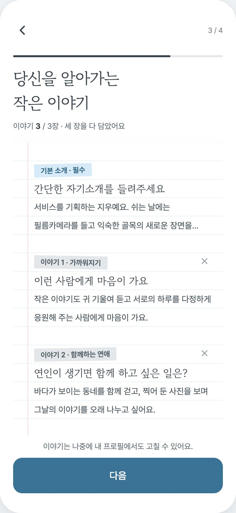
지금줄노트 한 장
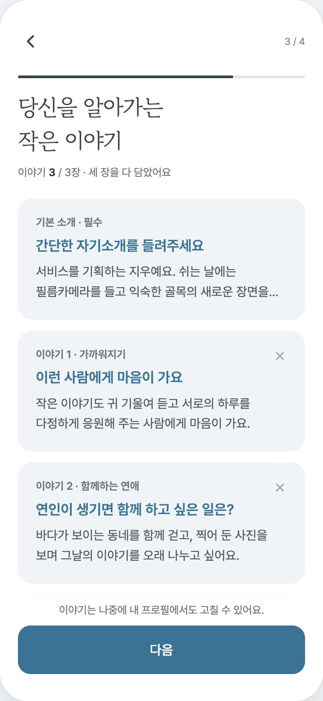
N1회색 카드
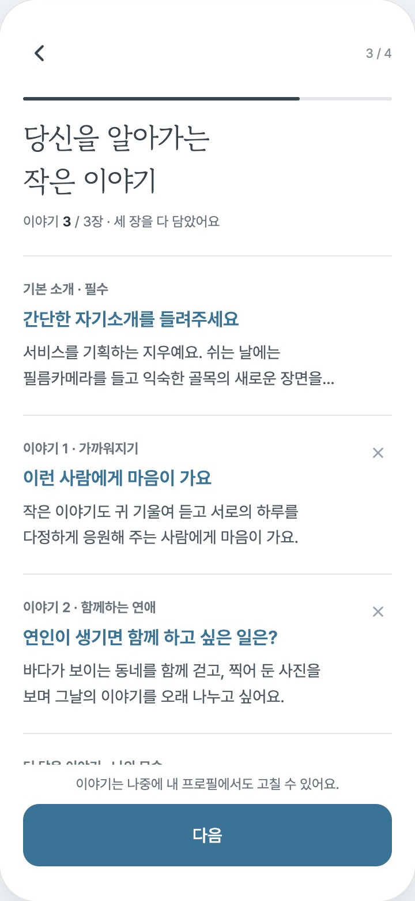
N2구분선 목록
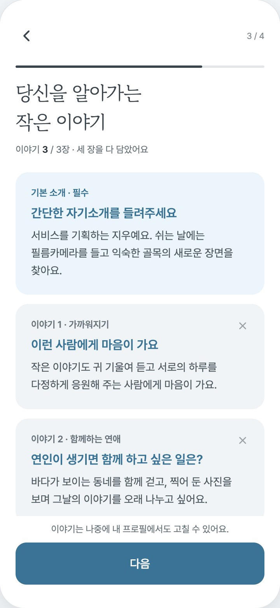
N3기본 소개만 하늘빛
한 장 남았을 때
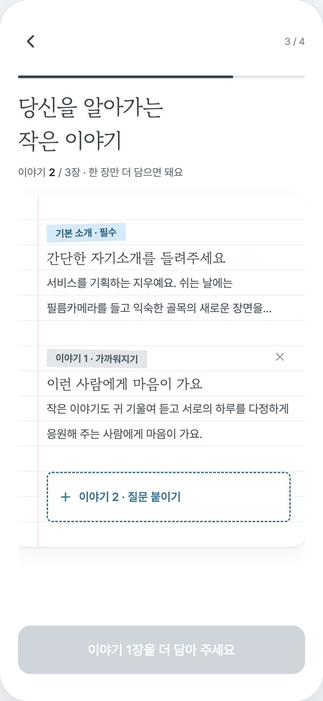
지금줄노트 한 장
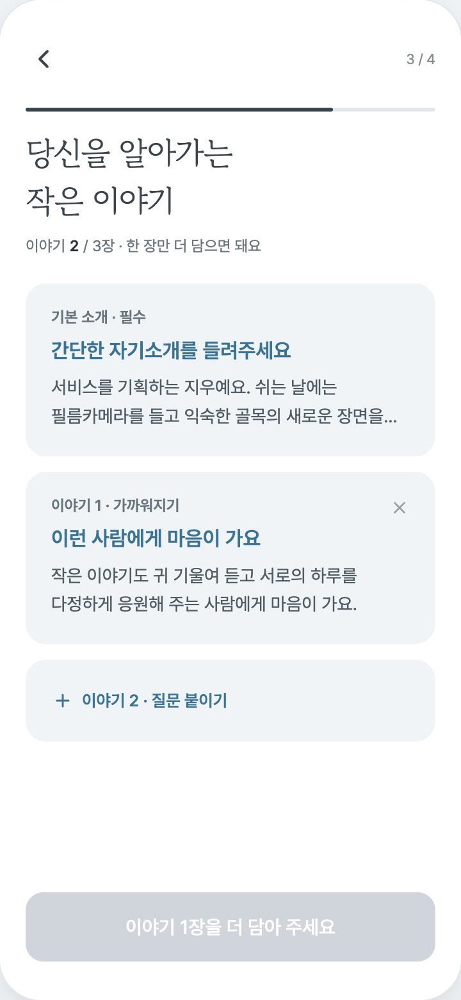
N1회색 카드
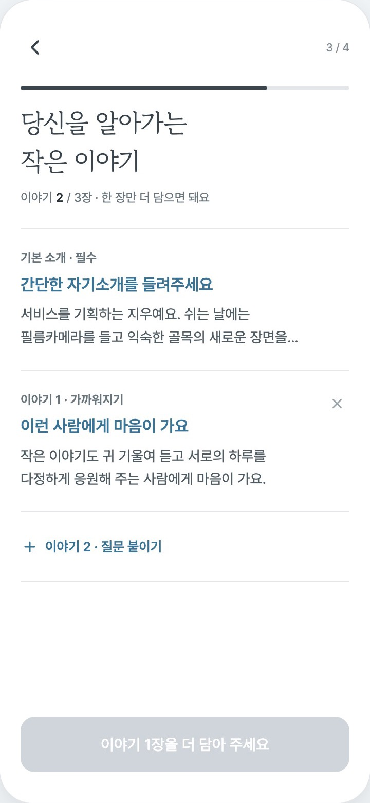
N2구분선 목록
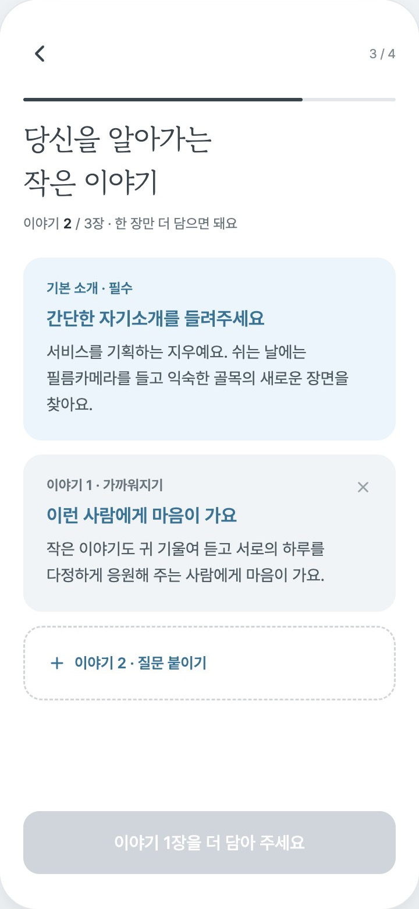
N3기본 소개만 하늘빛
이어서 · 이야기 쓰는 화면
지금: 질문이 따옴표 붙은 명조, 입력칸에 하늘색 노트 줄, 아래에 연필 막대 + 20 · 80 · 150 · 200 눈금(빨강 · 파랑 동그라미)까지 있어서 쓰는 칸보다 장식이 많아요.
세 안 공통 (목록 N1과 같은 결): 꼬리표 회색, 질문은 따옴표 빼고 우리 명조 21 primary. 제목 옆 바꾸기 아이콘 대신 회색 "질문 고르기" 버튼. 입력칸은 노트 줄 · 테두리를 빼고 회색(cool-neutral-50) 칸, 쓰는 중에만 primary 테두리. 예시 보기 · 이 이야기 빼기 · 아래 버튼은 그대로.
W1 얇은 막대: 연필 · 눈금 대신 칸 아래 4 두께 회색 막대 하나(위 진행 막대와 같은 진회색). 그 아래 "이제 담을 수 있어요 · 76자" 한 줄. 참고 링크와 가장 가까워요.
W2 연필 막대 살리기: 칸만 W1처럼 바꾸고 연필 막대 · 눈금은 남기되 색을 회색으로. 쓰는 재미는 남기고 색만 정리.
W3 칸 안에 막대 · 글자 수: 막대와 "76 / 300자"를 회색 칸 안 아래에 넣어 입력 한 덩어리로. 칸 밖에는 안내 한 줄만.
비어 있을 때
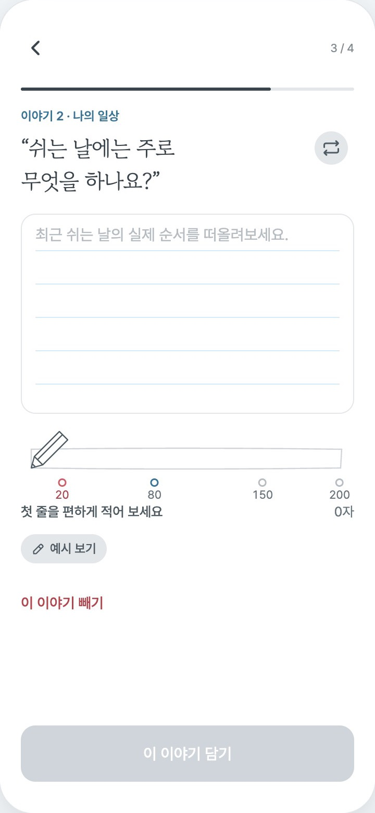
지금줄노트 칸 · 연필 막대
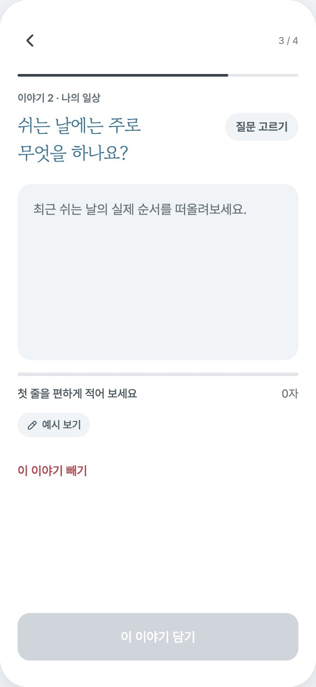
W1회색 칸 + 얇은 막대
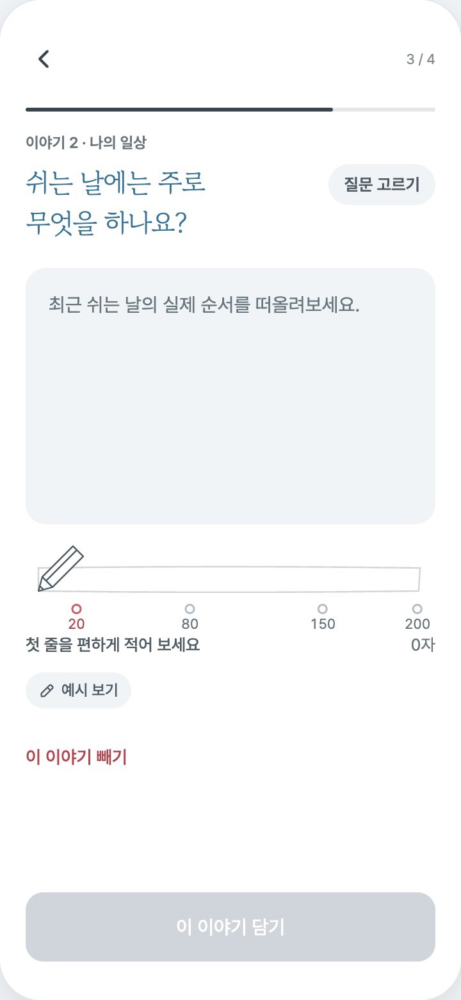
W2연필 막대는 회색으로 남기기
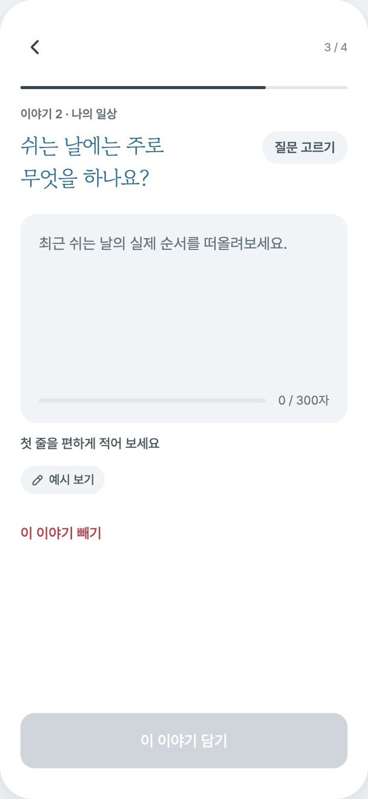
W3칸 안에 막대 · 글자 수
76자 썼을 때
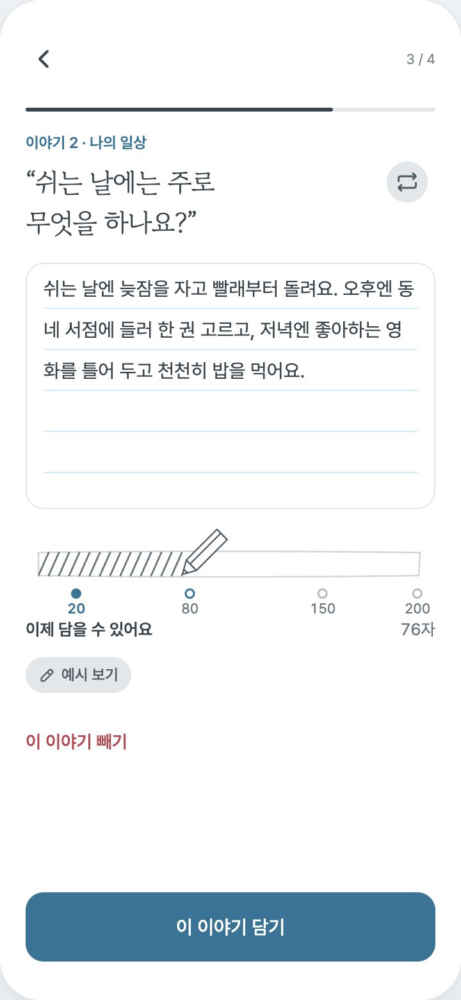
지금줄노트 칸 · 연필 막대
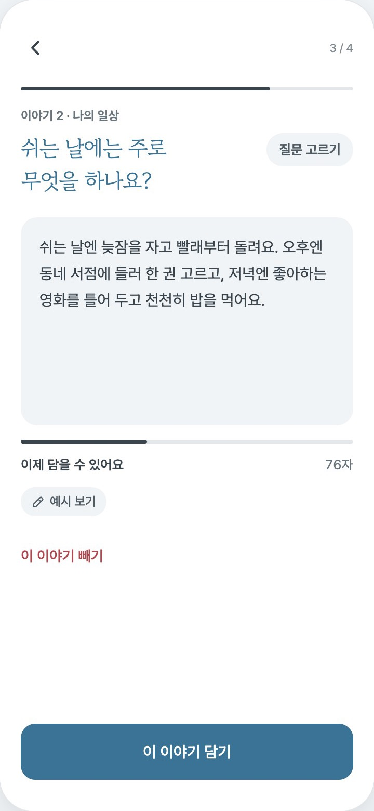
W1회색 칸 + 얇은 막대
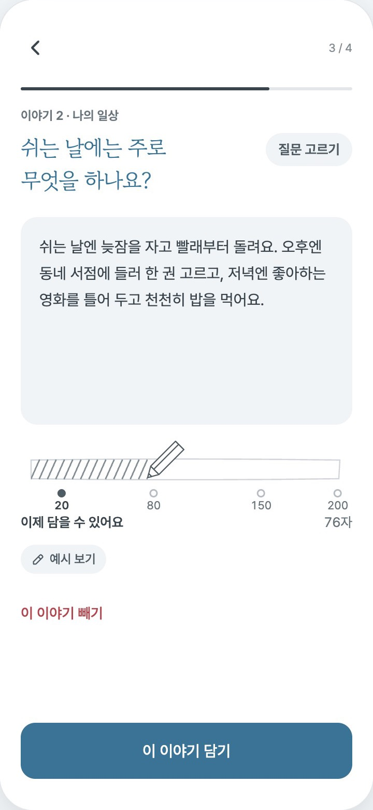
W2연필 막대는 회색으로 남기기
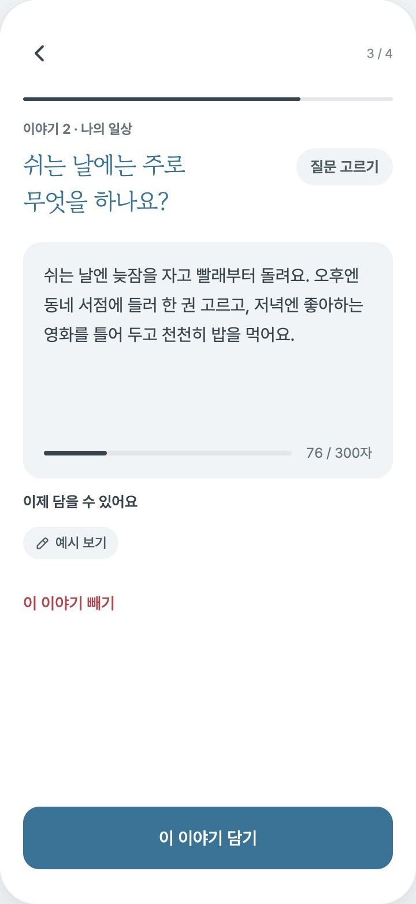
W3칸 안에 막대 · 글자 수
이어서 · 질문 고르기 시트
지금: 질문 카드가 하늘 · 분홍 · 노랑 파스텔로 번갈아 칠해지고, 주제 탭은 흰 바탕 + 테두리. 옆으로 넘겨야 다음 질문이 보여요.
세 안 공통: 탭은 테두리 대신 회색(cool-neutral-50) 바탕, 고른 탭은 지금처럼 진회색. 질문은 명조 그대로 primary(쓰기 화면 제목과 같은 모양), 예시는 회색. 이미 고른 질문은 회색 글자 + "고른 질문".
S1 회색 카드 덱: 옆으로 넘기는 덱은 그대로, 카드만 회색 한 가지로.
S2 회색 카드 세로 목록: 한 주제의 질문을 위아래로 한눈에. 카드는 질문 + 예시 한 줄, "이 질문으로 쓰기"와 점은 빼고 카드를 누르면 바로 쓰기로.
S3 구분선 목록: S2에서 카드 바탕도 빼고 줄 사이 얇은 선만. 가장 조용하고 한 화면에 가장 많이 보여요.
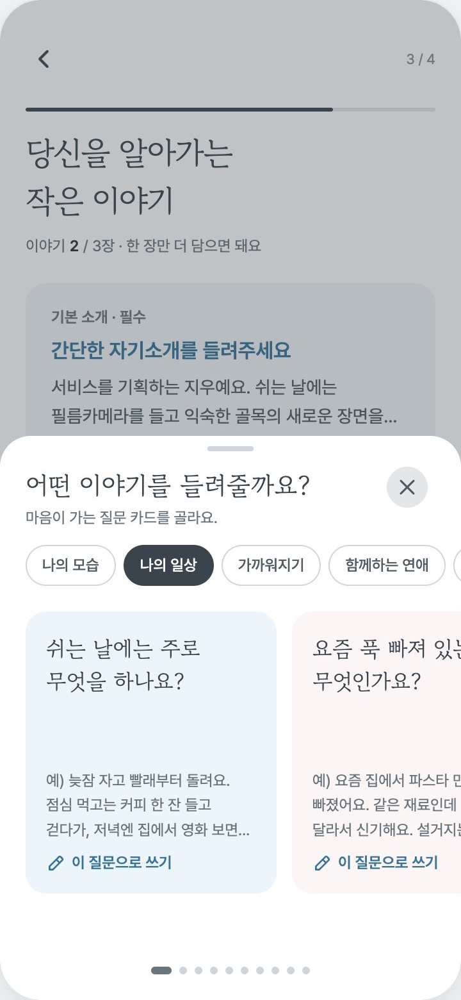
지금파스텔 카드 덱 · 테두리 탭
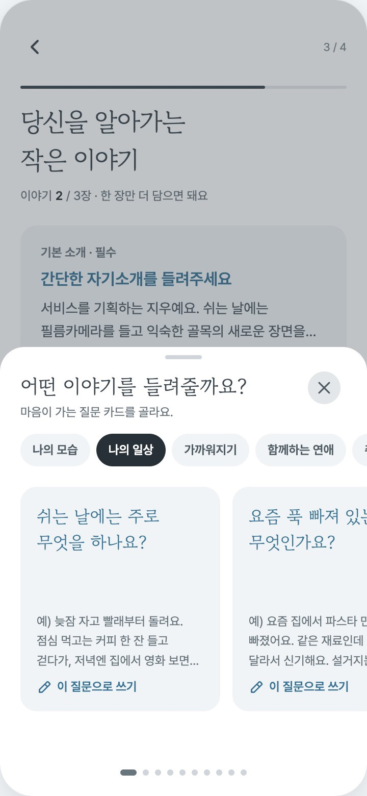
S1회색 카드 덱
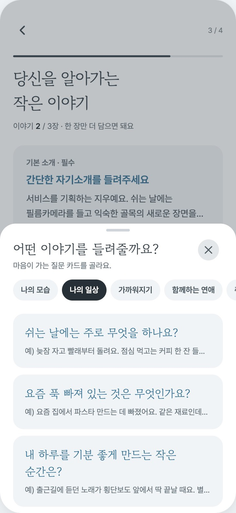
S2회색 카드 세로 목록
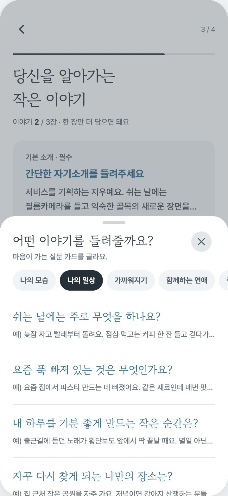
S3구분선 목록
이어서 · 이야기 쓰기 · 예시 늘 펼치기
지금: "예시 보기"를 눌러야 예시가 열려요. 처음 쓰는 사람은 버튼을 지나치기 쉬워요.
E1 안내 줄 아래 회색 상자: 버튼 없이 처음부터 펼친 상자. 작은 "예시" 꼬리표 + 예시 14 + "눌러서 복사"(지금처럼 눌러서 복사). 위치는 지금 버튼 자리 그대로.
E2 질문 바로 아래 글자로: 쓰기 전에 먼저 읽도록 질문과 입력칸 사이에. 입력칸과 헷갈리지 않게 바탕 없이 회색 글자만.
E3 입력칸 안: 비어 있는 입력칸에 안내 + "예) …"를 흐리게. 상자가 하나 줄어 가장 간단하지만, 첫 글자를 쓰면 예시가 사라지고 복사가 안 돼요.
비어 있을 때
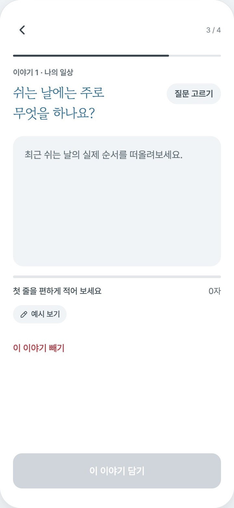
지금예시 보기를 눌러야 열림
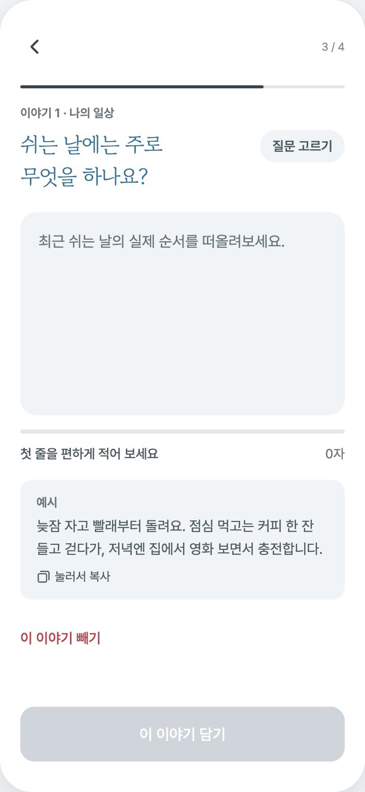
E1안내 줄 아래 회색 상자
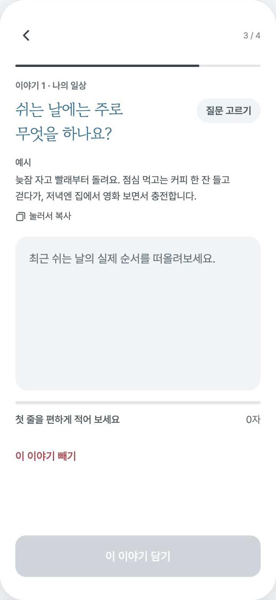
E2질문 바로 아래 글자로
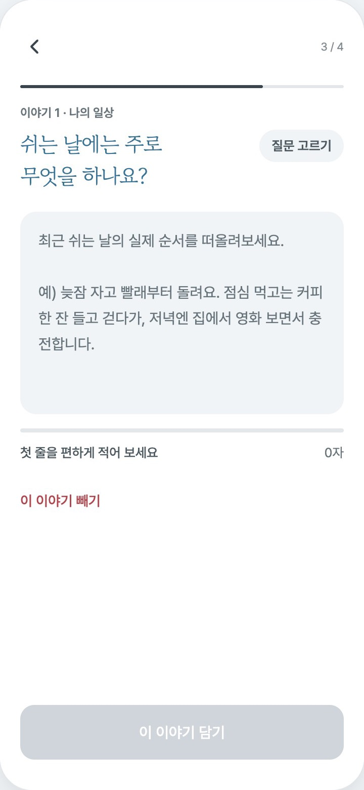
E3입력칸 안 (비어 있을 때만)
76자 썼을 때
지금예시 보기를 눌러야 열림
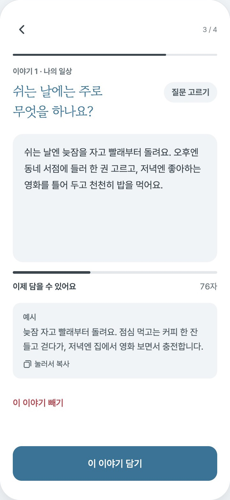
E1안내 줄 아래 회색 상자
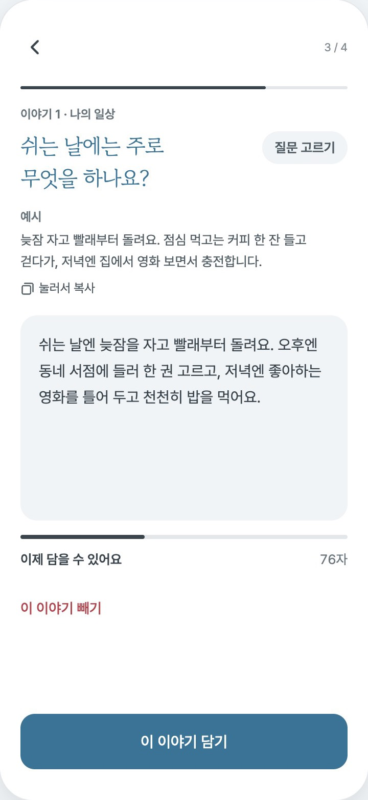
E2질문 바로 아래 글자로
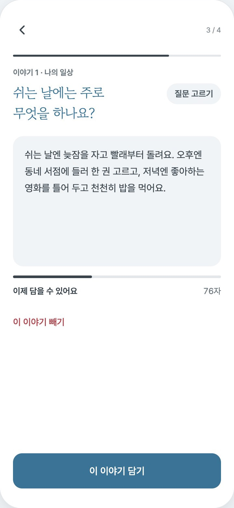
E3입력칸 안 (비어 있을 때만)
이어서 · 예시 작동 순서 (E1 2차, 시연 화면에 넣은 것)
바뀐 점: "눌러서 복사"를 없애고(눌리지 않는 글), 상자 바탕 · 글자를 한 단계 연하게.
보이고 숨는 때: 화면에 들어왔을 때(입력칸에 커서가 자동으로 있어도) 예시가 보여요. 입력칸을 직접 누르거나 글자를 쓰기 시작하면 사라지고, 그 뒤엔 칸 밖을 눌러도 다시 나오지 않아요. 휴대폰에서는 2 · 3에서 키보드가 올라와 있어요.